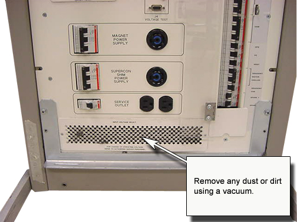

Operating Documentation
Direction 5133315-3, Rev# 14
Signa EXCITE HD 1.5T Service Methods
Module Version 1.0, Version Date 5/15/07
Operating Documentation |
Clean the front of PDU air inlet with a vacuum. See Illustration 1.
| ||||
| Electrocution Hazard! | ||||
| High voltages exist behind the air intake during normal PDU operation. | ||||
| It is not necessary to remove the air intake grill from the PDU for this procedure. Just vacuum dust and dirt from the front of the grill. |
Illustration 1:
